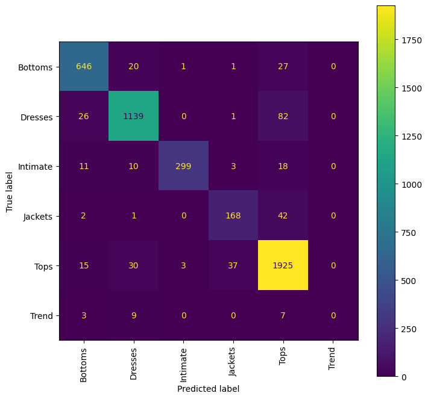

import osModel Evaluations
This module contains some functions to evaluate your model in-depth
os.environ['CUDA_VISIBLE_DEVICES'] = "0"from that_nlp_library.text_transformation import *
from that_nlp_library.text_augmentation import *
from that_nlp_library.text_main import *
from that_nlp_library.utils import seed_everythingfrom underthesea import text_normalize
from functools import partial
from pathlib import Path
from transformers import RobertaTokenizer
from transformers.models.roberta.modeling_roberta import RobertaForSequenceClassification
import nlpaug.augmenter.char as nac
from datasets import load_dataset
import random
import pandas as pd
import numpy as npfrom that_nlp_library.model_main import *
from sklearn.metrics import f1_score, accuracy_scoreEvaluation for Single-head/Multi-head Classification
Create a TextDataController
# Define the custom augmentation function
def nlp_aug_stochastic(x,aug=None,p=0.5):
if not isinstance(x,list):
if random.random()<p: return aug.augment(x)[0]
return x
news=[]
originals=[]
for _x in x:
if random.random()<p: news.append(_x)
else: originals.append(_x)
# only perform augmentation when needed
if len(news): news = aug.augment(news)
return news+originalsaug = nac.KeyboardAug(aug_char_max=3,aug_char_p=0.1,aug_word_p=0.07)
nearby_aug_func = partial(nlp_aug_stochastic,aug=aug,p=0.3)dset = load_dataset('sample_data',data_files=['Womens_Clothing_Reviews.csv'],split='train')tdc = TextDataController(dset,
main_text='Review Text',
label_names='Department Name',
sup_types='classification',
filter_dict={'Review Text': lambda x: x is not None,
'Department Name': lambda x: x is not None,
},
metadatas=['Title','Division Name'],
content_transformations=[text_normalize,str.lower],
content_augmentations= [nearby_aug_func,str.lower],
# add "str.lower" here because nearby_aug might return uppercase character
val_ratio=0.2,
batch_size=1000,
seed=42,
num_proc=20,
verbose=False
)tokenizer = RobertaTokenizer.from_pretrained('roberta-base')
tdc.process_and_tokenize(tokenizer,max_length=100,shuffle_trn=True)/home/quan/anaconda3/envs/nlp_dev/lib/python3.10/site-packages/huggingface_hub/file_download.py:1132: FutureWarning: `resume_download` is deprecated and will be removed in version 1.0.0. Downloads always resume when possible. If you want to force a new download, use `force_download=True`.
warnings.warn(Define and train model
num_classes = len(tdc.label_lists[0])
metric_funcs = [partial(f1_score,average='macro'),accuracy_score]seed_everything(42)
model_name='roberta-base'
model = RobertaForSequenceClassification.from_pretrained(model_name,num_labels=num_classes).to('cuda:0')/home/quan/anaconda3/envs/nlp_dev/lib/python3.10/site-packages/huggingface_hub/file_download.py:1132: FutureWarning: `resume_download` is deprecated and will be removed in version 1.0.0. Downloads always resume when possible. If you want to force a new download, use `force_download=True`.
warnings.warn(
Some weights of RobertaForSequenceClassification were not initialized from the model checkpoint at roberta-base and are newly initialized: ['classifier.dense.bias', 'classifier.dense.weight', 'classifier.out_proj.bias', 'classifier.out_proj.weight']
You should probably TRAIN this model on a down-stream task to be able to use it for predictions and inference.controller = ModelController(model,
data_store=tdc,
seed=42)lr = 1e-4
bs=32
wd=0.01
epochs= 3
controller.fit(epochs,lr,
metric_funcs=metric_funcs,
batch_size=bs,
weight_decay=wd,
save_checkpoint=False,
compute_metrics=compute_metrics,
)
[849/849 05:01, Epoch 3/3]
| Epoch | Training Loss | Validation Loss | F1 Score Department name | Accuracy Score Department name |
|---|---|---|---|---|
| 1 | No log | 0.316325 | 0.734646 | 0.913389 |
| 2 | 0.419000 | 0.259580 | 0.752915 | 0.923995 |
| 3 | 0.419000 | 0.265681 | 0.751789 | 0.922890 |
Generate predictions
We will do model evaluation on the validation set
df_val = controller.predict_ddict(ds_type='validation')-------------------- Start making predictions --------------------df_val = df_val.to_pandas()
df_val.head()| Title | Review Text | Division Name | Department Name | label | input_ids | attention_mask | pred_Department Name | pred_prob_Department Name | |
|---|---|---|---|---|---|---|---|---|---|
| 0 | general petite . . such a fun jacket ! great t... | general petite | Intimate | 2 | [0, 15841, 4716, 1459, 479, 479, 215, 10, 1531... | [1, 1, 1, 1, 1, 1, 1, 1, 1, 1, 1, 1, 1, 1, 1, ... | Jackets | 0.881662 | |
| 1 | simple and elegant | general petite . simple and elegant . i though... | general petite | Tops | 4 | [0, 15841, 4716, 1459, 479, 2007, 8, 14878, 47... | [1, 1, 1, 1, 1, 1, 1, 1, 1, 1, 1, 1, 1, 1, 1, ... | Tops | 0.994637 |
| 2 | retro and pretty | general . retro and pretty . this top has a bi... | general | Tops | 4 | [0, 15841, 479, 11299, 8, 1256, 479, 42, 299, ... | [1, 1, 1, 1, 1, 1, 1, 1, 1, 1, 1, 1, 1, 1, 1, ... | Tops | 0.994337 |
| 3 | summer/fall wear | general petite . summer / fall wear . i first ... | general petite | Dresses | 1 | [0, 15841, 4716, 1459, 479, 1035, 1589, 1136, ... | [1, 1, 1, 1, 1, 1, 1, 1, 1, 1, 1, 1, 1, 1, 1, ... | Dresses | 0.986489 |
| 4 | perfect except slip | general petite . perfect except slip . this is... | general petite | Dresses | 1 | [0, 15841, 4716, 1459, 479, 1969, 4682, 9215, ... | [1, 1, 1, 1, 1, 1, 1, 1, 1, 1, 1, 1, 1, 1, 1, ... | Dresses | 0.986804 |
Start the model evaluation
evaluate_classification_model_metadata
evaluate_classification_model_metadata (df:pandas.core.frame.DataFrame, metadatas:str|list, label_name:str, pred_name:str, metric_funcs:list)
| Type | Details | |
|---|---|---|
| df | pd.DataFrame | The main dataframe containing the predictions |
| metadatas | str | list | Metadata(s) to perform analysis |
| label_name | str | Labels column name |
| pred_name | str | Predictions column name |
| metric_funcs | list | Metric(s) to calculate |
metric_funcs = [partial(f1_score,average='macro'),accuracy_score]evaluate_classification_model_metadata(df_val,metadatas='Division Name',
label_name='Department Name',
pred_name='pred_Department Name',
metric_funcs=metric_funcs
)-------------------- Department Name Analysis on metadata: Division Name --------------------
---------- Distribution ----------
count proportion
Division Name
general 2688 0.593902
general petite 1546 0.341582
initmates 292 0.064516
---------- Metrics for each value in Division Name ----------
- For all data:
f1_score: 0.7518 . accuracy_score: 0.9229 .
- For general:
f1_score: 0.5958 . accuracy_score: 0.9219 .
- For general petite:
f1_score: 0.6386 . accuracy_score: 0.9101 .
- For initmates:
f1_score: 1.0000 . accuracy_score: 1.0000 . show_top_n_predictions
show_top_n_predictions (df:pandas.core.frame.DataFrame, text_name:str, label_name:str, pred_name:str, prob_name:str, is_incorrect=True, ascending=False, n_show=10)
| Type | Default | Details | |
|---|---|---|---|
| df | pd.DataFrame | The main dataframe containing the predictions | |
| text_name | str | Texts column name | |
| label_name | str | Labels column name | |
| pred_name | str | Predictions column name | |
| prob_name | str | Prediction probabilitys column name | |
| is_incorrect | bool | True | To show top correct or incorrect sentences |
| ascending | bool | False | To sort by prob_name ascendingly or descendingly |
| n_show | int | 10 | Number of sentences to show |
show_top_n_predictions(df_val,text_name='Review Text',
label_name='Department Name',
pred_name='pred_Department Name',
prob_name='pred_prob_Department Name',
is_incorrect=True,
ascending=False,n_show=5)Text: general petite . . it is a beautiful top but runs huge ! ! ! i followed other reviews and ordered a size down hoping it would work but it was totally unflattering ! i wanted so bad to love it but there was no way i could keep it ! !
True label: Dresses, but predict Tops, with confidence 0.9948
------------------------------------------------------------
Text: general . great " cardigan " . if you're very small-framed and / or petite , i would size down in this . unless you want a really slouchy look and fit . ---------- i have very broad shoulders and very large biceps , and typically wear a m / l in retailer tops . sometimes if a top is a pullover style ( as opposed to button-down ) i have to size up to a 12 to get the top to accommodate my shoulder width and biceps . so i was leery the size 8 / italian 44 would fit , but it does , with room to spare , albeit it is not as loose or long in the ar
True label: Jackets, but predict Tops, with confidence 0.9946
------------------------------------------------------------
Text: general . is this top orange or red . wish this site had " ask a question about the product " feature like amazon does . just wondering if anyone has seen this product in person to verify color ? it looks orange but descriptor says red . would appreciate feedback . thank you for your help .
True label: Jackets, but predict Tops, with confidence 0.9944
------------------------------------------------------------
Text: general petite . . this is absolutely gorgeous cardigan ! the pictures don't do it justice ! it's comfortable and soft and very trendy at the same time ! i bought it in teal and in medium , i am 5 ' 3 " and usually wear 10-12 ! even though i think it runs tts , but for more fitted look , medium fits better ! i am blond and this color looks great ! i also loved it when unzipped the upper part , it looked even better ! it is perfect with leggings in grey , blue , green and black , also beautiful with aqua flora leggings and with re
True label: Intimate, but predict Tops, with confidence 0.9944
------------------------------------------------------------
Text: general petite . sweet top . i love this top . i had no issues with fabric . it is soft and light . the wrist details are very pretty . i love the buttons . it fits true to size and it is a good layering top . i got the red which is true to the picture . not looking red but a bright coral color .
True label: Intimate, but predict Tops, with confidence 0.9944
------------------------------------------------------------show_top_n_predictions(df_val,text_name='Review Text',
label_name='Department Name',
pred_name='pred_Department Name',
prob_name='pred_prob_Department Name',
is_incorrect=True,
ascending=True,n_show=5)Text: general . perfect in all respects . true to size for petite person ; bought in blue - subtle shading , looks great ; paired with your blue straight leg blue " jeans " ; perfect outfit for almost all occasions .
True label: Tops, but predict Bottoms, with confidence 0.3470
------------------------------------------------------------
Text: general . amazing . this fits so perfect ! it is light fabric , not clingy . very flattering ! i am 5 ' 4 120 lbs with athletic build .
True label: Bottoms, but predict Dresses, with confidence 0.3505
------------------------------------------------------------
Text: general . disappointed . bummed out .. this is super cheaply made and very expensive ... the design is different , the color is beautiful , but the material is a different story .. it should be priced at the most 30 bucks .. not 128 .. i'm returning them . also , they run very big .. !
True label: Bottoms, but predict Tops, with confidence 0.3516
------------------------------------------------------------
Text: general . tons of compliments . wore this to work and nearly everyone complimented me on it . very comfortable . lots of detailing . perfect for fall . pockets ! i'm usually somewhere between a s and m but this piece was generously cut and a s was perfect . i debated ordering the petite , but actually the regular cut was the perfect length even though i'm only 5 ' 4 " .
True label: Dresses, but predict Bottoms, with confidence 0.3578
------------------------------------------------------------
Text: general petite . misnomer in color , stunning on any figure . i'm not sure why they call this " black " because what you see in this pictures depicted is pretty much the shade in person . the fabric itself is lovely . it made my wider hips look smaller ! :) ___________ pros : - drapes beautifully on the body , especially for curvier gals . - not black but a deep navy / velvet look and feel . - very forgiving and stretchy . - perfect length in front and back . - hides imperfections wonderfully . - soft , flows well , and unique ! cons : - material is thin , not for winter a
True label: Bottoms, but predict Dresses, with confidence 0.3578
------------------------------------------------------------evaluate_classification_model
evaluate_classification_model (df:pandas.core.frame.DataFrame, text_name:str, label_name:str, pred_name:str, prob_name:str, metric_funcs:list=[], metadatas:str|list=[], n_show=10, cm_figsize=(20, 20))
| Type | Default | Details | |
|---|---|---|---|
| df | pd.DataFrame | The main dataframe containing the predictions | |
| text_name | str | Texts column name | |
| label_name | str | Labels column name | |
| pred_name | str | Predictions column name | |
| prob_name | str | Prediction probabilitys column name | |
| metric_funcs | list | [] | Metric(s) to calculate |
| metadatas | str | list | [] | Metadata(s) to perform analysis |
| n_show | int | 10 | Number of sentences to show |
| cm_figsize | tuple | (20, 20) | Confusion matrixs figure size |
evaluate_classification_model(df_val,text_name='Review Text',
label_name='Department Name',
pred_name='pred_Department Name',
prob_name='pred_prob_Department Name',
metric_funcs=metric_funcs,
metadatas='Division Name',
cm_figsize=(8,8),
n_show=5
)-------------------- Department Name Analysis --------------------
--------------- Classification Report ---------------
precision recall f1-score support
Bottoms 0.92 0.93 0.92 695
Dresses 0.94 0.91 0.93 1248
Intimate 0.99 0.88 0.93 341
Jackets 0.80 0.79 0.79 213
Tops 0.92 0.96 0.94 2010
Trend 0.00 0.00 0.00 19
accuracy 0.92 4526
macro avg 0.76 0.74 0.75 4526
weighted avg 0.92 0.92 0.92 4526
--------------- Confusion Matrix ---------------
-------------------- Department Name Analysis on metadata: Division Name --------------------
---------- Distribution ----------
count proportion
Division Name
general 2688 0.593902
general petite 1546 0.341582
initmates 292 0.064516
---------- Metrics for each value in Division Name ----------
- For all data:
f1_score: 0.7518 . accuracy_score: 0.9229 .
- For general:
f1_score: 0.5958 . accuracy_score: 0.9219 .
- For general petite:
f1_score: 0.6386 . accuracy_score: 0.9101 .
- For initmates:
f1_score: 1.0000 . accuracy_score: 1.0000 .
--------------- Let's look at some wrong predictions with high confidence ---------------
Text: general petite . . it is a beautiful top but runs huge ! ! ! i followed other reviews and ordered a size down hoping it would work but it was totally unflattering ! i wanted so bad to love it but there was no way i could keep it ! !
True label: Dresses, but predict Tops, with confidence 0.9948
------------------------------------------------------------
Text: general . great " cardigan " . if you're very small-framed and / or petite , i would size down in this . unless you want a really slouchy look and fit . ---------- i have very broad shoulders and very large biceps , and typically wear a m / l in retailer tops . sometimes if a top is a pullover style ( as opposed to button-down ) i have to size up to a 12 to get the top to accommodate my shoulder width and biceps . so i was leery the size 8 / italian 44 would fit , but it does , with room to spare , albeit it is not as loose or long in the ar
True label: Jackets, but predict Tops, with confidence 0.9946
------------------------------------------------------------
Text: general . is this top orange or red . wish this site had " ask a question about the product " feature like amazon does . just wondering if anyone has seen this product in person to verify color ? it looks orange but descriptor says red . would appreciate feedback . thank you for your help .
True label: Jackets, but predict Tops, with confidence 0.9944
------------------------------------------------------------
Text: general petite . . this is absolutely gorgeous cardigan ! the pictures don't do it justice ! it's comfortable and soft and very trendy at the same time ! i bought it in teal and in medium , i am 5 ' 3 " and usually wear 10-12 ! even though i think it runs tts , but for more fitted look , medium fits better ! i am blond and this color looks great ! i also loved it when unzipped the upper part , it looked even better ! it is perfect with leggings in grey , blue , green and black , also beautiful with aqua flora leggings and with re
True label: Intimate, but predict Tops, with confidence 0.9944
------------------------------------------------------------
Text: general petite . sweet top . i love this top . i had no issues with fabric . it is soft and light . the wrist details are very pretty . i love the buttons . it fits true to size and it is a good layering top . i got the red which is true to the picture . not looking red but a bright coral color .
True label: Intimate, but predict Tops, with confidence 0.9944
------------------------------------------------------------/home/quan/anaconda3/envs/nlp_dev/lib/python3.10/site-packages/sklearn/metrics/_classification.py:1471: UndefinedMetricWarning: Precision and F-score are ill-defined and being set to 0.0 in labels with no predicted samples. Use `zero_division` parameter to control this behavior.
_warn_prf(average, modifier, msg_start, len(result))
/home/quan/anaconda3/envs/nlp_dev/lib/python3.10/site-packages/sklearn/metrics/_classification.py:1471: UndefinedMetricWarning: Precision and F-score are ill-defined and being set to 0.0 in labels with no predicted samples. Use `zero_division` parameter to control this behavior.
_warn_prf(average, modifier, msg_start, len(result))
/home/quan/anaconda3/envs/nlp_dev/lib/python3.10/site-packages/sklearn/metrics/_classification.py:1471: UndefinedMetricWarning: Precision and F-score are ill-defined and being set to 0.0 in labels with no predicted samples. Use `zero_division` parameter to control this behavior.
_warn_prf(average, modifier, msg_start, len(result))